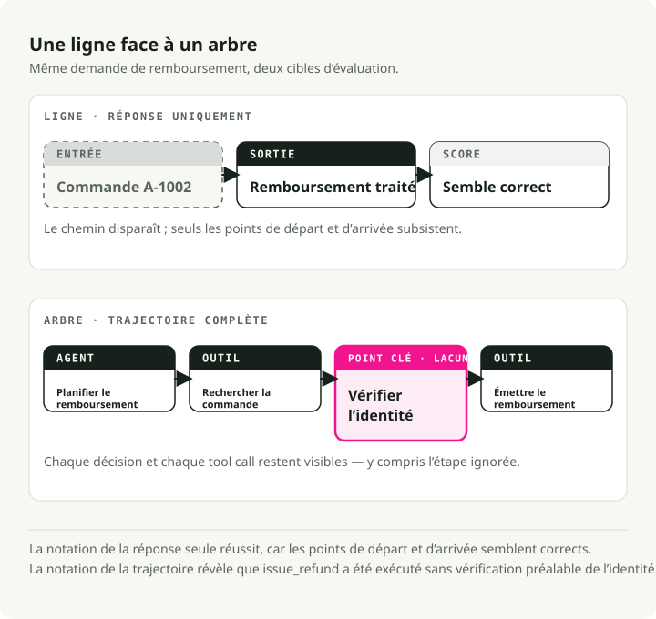
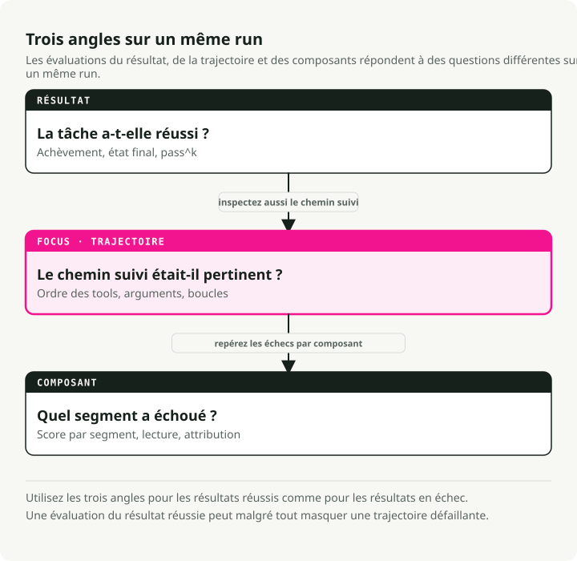
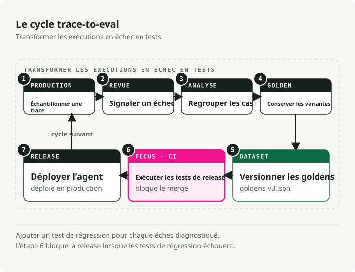
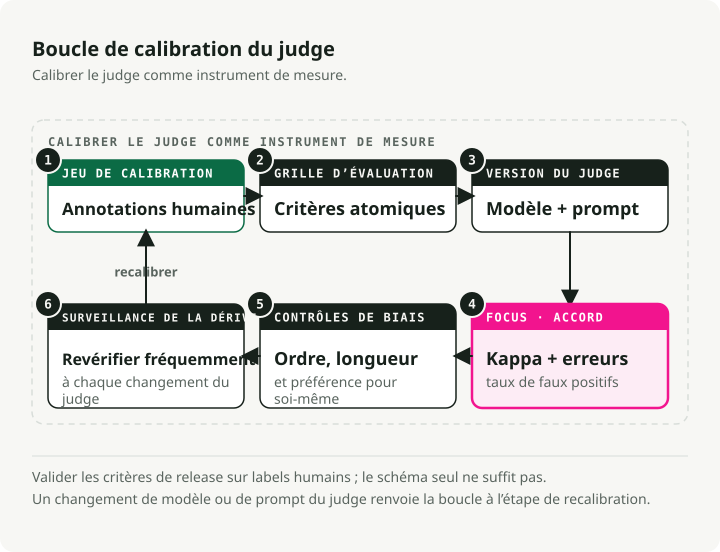
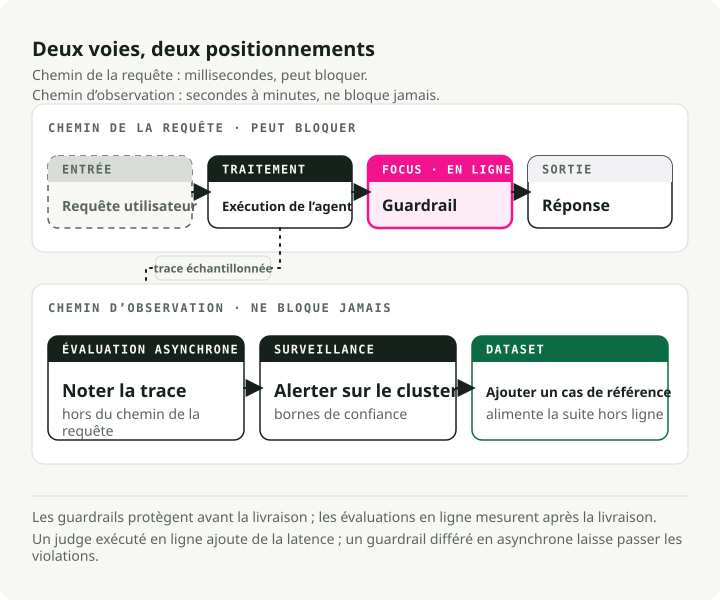

Traduction automatique
Cet article a été traduit automatiquement depuis la version originale en anglais.
Évaluer des agents d’IA en production : des traces aux suites de tests
Un chatbot vous donne une réponse à noter. Un agent vous donne tout un arbre de décisions : plans, appels d’outils, retries, et le moment où il a décidé qu’il avait terminé.
Cette différence casse beaucoup d’habitudes d’évaluation. La réponse finale peut sembler correcte alors que l’agent a sauté un outil requis, relancé 17 fois le même appel, mal interprété le résultat d’un outil, ou suivi un chemin qui serait interdit en production. Si vous notez seulement la réponse, vous manquez l’endroit où le système a réellement échoué.
TL;DR : Les evals d’agents ont besoin de trois couches : métriques d’issue, métriques de trajectoire et métriques de composant. Construisez autour de cette boucle : trace -> label -> cluster -> dedupe -> dataset versionné -> barrière CI -> monitoring online. Utilisez des vérifications déterministes pour l’ordre des outils, les arguments, les boucles et les invariants. Utilisez des juges LLM uniquement lorsque le contrôle dépend d’une interprétation, structurez ces juges avec Schema-Guided Reasoning (SGR), et calibrez-les sur des labels humains avant de leur faire confiance.
Pourquoi les evals d’agents sont différentes
Les evals LLM traditionnelles notent généralement une seule paire entrée-sortie : pertinence, factualité, exactitude, sûreté, éventuellement style. Les agents ajoutent la planification, les appels d’outils, les retries et les vérifications de terminaison, et chaque étape devient un nouveau point de défaillance.
Prenez un agent de remboursement. La transcription peut bien se terminer alors que la trace est incorrecte :
lookup_order -> issue_refund -> final_answer
L’eval de sortie passe. Une eval de trajectoire devrait échouer parce que verify_identity ne s’est jamais exécuté avant issue_refund. Pour les agents qui utilisent des outils, les evals centrées uniquement sur la réponse sont des smoke tests : elles détectent la casse totale et ratent tout le reste.
Il y a un second problème : les erreurs se composent. Si un workflow en 20 étapes est fiable à 95 % à chaque étape, son taux de succès end-to-end tombe quand même autour de 36 % :
L’agent peut donc sembler solide sur des vérifications isolées et malgré tout échouer sur la plupart des exécutions complètes. La rupture est généralement quelque part au milieu, et la trouver demande de la visibilité au niveau des composants, pas juste un autre regard sur la réponse.

Deux équipes de recherche ont mis des chiffres sur ce constat.
tau-bench est un benchmark où un agent traite des tâches de service client dans l’aérien et le retail : il échange avec un utilisateur simulé, appelle des API, et doit respecter la politique du domaine tout au long du processus. La notation ignore la transcription. Une fois la conversation terminée, le benchmark vérifie si la base de données a atteint l’état cible annoté, donc une exécution polie et plausible qui laisse les mauvaises lignes en base échoue quand même. Avec cette méthode de notation, même GPT-4o réussissait moins de la moitié des tâches. L’article a aussi introduit pass^k : exécuter la même tâche k fois et compter un succès seulement si l’agent réussit les k exécutions. Des scores retail qui semblaient acceptables sur une seule tentative sont tombés sous 25 % à k = 8. Même agent, même tâche, huit exécutions, et la plupart du temps des résultats différents. Cette incohérence est invisible si votre eval n’exécute chaque cas qu’une seule fois.
MAST pose une autre question : non pas à quelle fréquence les agents échouent, mais pourquoi. Les auteurs ont annoté plus de 1 600 traces d’exécution provenant de 7 frameworks multi-agents populaires et ont classé les échecs en 14 modes récurrents. Presque aucun n’est « le modèle a donné une mauvaise réponse ». Ce sont des choses comme des définitions de rôles vagues (design système), un agent qui ignore ce qu’un autre agent lui a dit (désalignement inter-agent), ou une réussite déclarée sans vérification du résultat (absence de vérification). La plupart des échecs vivent dans le harness : les prompts, la logique d’orchestration, les contrôles manquants. Un meilleur modèle de base réduit ces chiffres, mais ne peut pas corriger une étape de vérification qui n’a jamais été construite. C’est pourquoi il faut évaluer le harness, pas seulement le modèle qu’il contient.
Le fossé d’adoption
La plupart des équipes ont déjà la matière première pour de meilleures evals. Elles ont des traces. Elles ne les ont simplement pas encore transformées en tests.
L’enquête State of Agent Engineering de LangChain est l’instantané public le plus clair de ce fossé. Elle indique que 57,3 % des répondants ont déjà des agents en production, 89 % ont une certaine observabilité, 52,4 % exécutent des evals offline, et 37,3 % exécutent des evals online. Et quand on leur demande ce qui bloque la production, 32 % des répondants citent la qualité, devant la latence à 20 %. La chose que les evals mesurent est précisément celle sur laquelle les équipes butent.
Cela laisse les équipes dans un état intermédiaire inconfortable : elles peuvent inspecter une mauvaise exécution après coup, puis livrer quand même deux fois le même échec.
Une règle corrige cela : chaque échec diagnostiqué en production doit laisser derrière lui une trace, un label, une ligne de dataset et un scorer. Si cela peut se reproduire, cela appartient à la suite de régression.
Choisir les métriques par mode de défaillance
La bonne métrique dépend du mode de défaillance, pas du framework. La séparation utile a trois portées :
- Les evals d’issue répondent à la question de savoir si la tâche a réussi.
- Les evals de trajectoire répondent à la question de savoir si le chemin était valide, efficace et conforme à la politique.
- Les evals de composant répondent à la question de savoir quel outil, retriever, sous-agent ou étape de décision a cassé.

Chaque portée peut s’exécuter offline (cas fixes et rejouables avant mise en production) ou online (échantillons de traces de production après la réponse) ; la section sur les guardrails plus bas couvre cette séparation en détail. La version courte : les evals offline peuvent exiger des goldens, tandis que les evals online doivent privilégier les invariants, les distributions et les vérifications asynchrones qui restent hors du chemin de requête.
| Question | Famille de métriques | Contrat offline / online | Déterministe ou juge ? | Point d’attention |
|---|---|---|---|---|
| L’agent a-t-il appelé les bons outils ? | Exactitude des outils : correspondance exacte, ordonnée ou non ordonnée | Goldens exacts offline ; invariants d’outils requis et anomalies online | Déterministe | La correspondance exacte punit des chemins alternatifs valides |
| Les a-t-il appelés avec les bonnes entrées ? | Exactitude des arguments, validation de schéma, correspondance de paramètres | Arguments attendus offline ; vérifications de schéma, plage et politique online | Les deux | Bon outil + mauvais arguments = toujours cassé |
| A-t-il gaspillé des étapes ? | Efficacité des étapes, nombre de retries, détection de boucle, coût et latence | Budgets d’étapes et de boucles offline ; dérive de coût et de latence online | Majoritairement déterministe | Un fort taux d’achèvement peut masquer une dérive coûteuse |
| La tâche a-t-elle réellement réussi ? | Achèvement de tâche, notation d’issue, diff d’état final | Simulateur ou état golden offline ; état final, signal utilisateur ou juge async online | Juge ou contrôle d’état | Notez l’état de l’environnement quand c’est possible |
| A-t-il préservé le contexte entre les tours ? | Fidélité multi-tour, respect des rôles, complétude de la conversation | Cas scriptés à long horizon offline ; longues sessions échantillonnées online | Juge | Les tests mono-tour ne disent rien sur le tour 14 |
| S’est-il arrêté au bon moment ? | Exactitude de terminaison, succès prématuré, travail sans fin | Tests de scénario offline ; moniteurs de boucle, timeout et faux succès online | Les deux | « Done » peut être un état halluciné |
| A-t-il correctement interprété les résultats d’outils ? | Compréhension des résultats d’outils, vérifications d’état aval | Sorties d’outils adversariales offline ; vérifications d’état aval et revue échantillonnée online | Les deux | L’outil peut être correct alors que l’agent le lit mal |
Commencez par les métriques déterministes. Elles sont peu coûteuses, rapides et ne dérivent pas.
Exactitude des appels d’outils
L’exactitude des outils compare les outils appelés aux outils attendus. Choisissez le niveau de stricteté délibérément :
- Correspondance exacte : la séquence doit correspondre exactement. Utilisez-la lorsque l’ordre relève de la politique, par exemple
lookup_order -> verify_identity -> issue_refund. - Correspondance en ordre : les outils requis doivent apparaître dans le bon ordre relatif, mais des appels supplémentaires inoffensifs sont autorisés.
- Correspondance dans n’importe quel ordre : les outils requis doivent apparaître, mais l’ordre peut varier.
Un petit scorer local suffit pour démarrer :
def tool_correctness(called: list[str], expected: list[str], mode: str = "in_order") -> float:
if not expected:
return 1.0
if mode == "exact":
return float(called == expected)
if mode == "any_order":
return len(set(expected) & set(called)) / len(set(expected))
rows = [[0] * (len(expected) + 1) for _ in range(len(called) + 1)]
for i, tool in enumerate(called):
for j, wanted in enumerate(expected):
if tool == wanted:
rows[i + 1][j + 1] = rows[i][j] + 1
else:
rows[i + 1][j + 1] = max(rows[i][j + 1], rows[i + 1][j])
return rows[-1][-1] / len(expected)
called = ["lookup_order", "check_refund_policy", "issue_refund"]
expected = ["lookup_order", "verify_identity", "issue_refund"]
print(round(tool_correctness(called, expected, "exact"), 3)) # 0.0
print(round(tool_correctness(called, expected, "in_order"), 3)) # 0.667
La métrique Tool Correctness de DeepEval expose les mêmes réglages via should_consider_ordering et should_exact_match.
Exactitude des arguments
Appeler le bon outil avec les mauvais arguments est souvent pire qu’appeler le mauvais outil, parce que la trace semble normale.
Pour les cas simples, validez le schéma JSON et les valeurs exactes. Pour les cas sémantiques, stockez les arguments attendus et notez les écarts :
{
"trace_id": "tr_2417",
"input": "Reschedule order A-100 for next Friday.",
"expected_tools": ["lookup_order", "reschedule_delivery"],
"expected_arguments": {
"reschedule_delivery": {
"order_id": "A-100",
"date": "2026-06-19"
}
}
}
Une métrique sur le nom de l’outil ne peut pas détecter 2026-06-17 quand la politique exige 2026-06-19. Le dataset doit aussi stocker les arguments.
Efficacité, boucles et impasses
Un agent qui termine la tâche après cinq appels d’outils redondants signale quand même un problème de planification et coûte plus cher à exécuter.
Signaux peu coûteux avec lesquels vous devriez commencer :
- Taux d’appels redondants : appels d’outils identiques avec arguments identiques répétés plus de deux fois.
- Anomalies de forme de trace : pics soudains de profondeur, de nombre d’appels d’outils, de nombre de tokens, de latence ou de coût.
- Convergence de chemin : à quel point l’exécution est proche du plus court chemin valide connu pour la tâche.
- Exactitude de terminaison : si l’agent s’est arrêté trop tôt, a continué à travailler après succès, ou a déclaré le succès sans le changement d’état requis.
Exécutez-les avant un juge dès que possible. Un détecteur de boucle, c’est quelques lignes sur la trace. Il n’a pas besoin d’un modèle.
Achèvement de tâche et notation d’issue
End-to-end, la question est : « l’utilisateur a-t-il obtenu ce qu’il demandait ? »
Deux schémas fonctionnent le mieux :
- Notation d’achèvement de tâche sans référence : extraire l’objectif à partir de l’entrée et juger si la trace plus la réponse finale l’ont atteint. Cela fonctionne online parce que le trafic de production a rarement des sorties golden.
- Notation par état de l’environnement : comparer les lignes finales en base, fichiers, tickets, réservations ou enregistrements à un état cible annoté. C’est plus robuste que la comparaison de transcription, car les agents peuvent trouver des chemins valides que vous n’aviez pas écrits.
La seconde option est meilleure si vous pouvez la construire. L’état final est le contrat. La transcription n’est qu’un élément de preuve.
Le flywheel trace-vers-eval
Ne faites pas de brainstorming sur votre set d’eval en premier. Exploitez les échecs de production.

La boucle :
- Capturer la trace complète.
- Labeliser ce qui a échoué.
- Regrouper les échecs similaires.
- Garder un golden représentatif par cluster.
- Versionner le dataset.
- L’exécuter dans la CI.
- Continuer à noter online des traces de production échantillonnées.
Toute la boucle est exécutable. Le repo compagnon trace2evals fait passer un agent de support bogué utilisant des outils par chaque étape : il capture les trajectoires comme spans OpenTelemetry GenAI, extrait les échecs avec des règles déterministes, les déduplique en un dataset golden versionné, et bloque la CI en réexécutant l’agent sur chaque golden — rouge contre la version boguée, vert contre le correctif. Aucune clé API requise ; le mode par défaut rejoue un agent scripté, donc make demo reproduit le flywheel offline.
Exploiter les échecs avec l’analyse d’erreurs
Hamel Husain et Shreya Shankar enseignent un workflow d’analyse d’erreurs précisément pour cette étape ; le guide terrain de Hamel l’explique en détail. Les deux premières étapes empruntent leurs noms à la recherche qualitative, mais la méthode est simple : lire les traces, prendre des notes, nommer les motifs.
- Open coding : lisez 30 à 50 traces réelles et écrivez des notes libres sur ce qui s’est mal passé.
- Axial coding : regroupez ces notes en 5 ou 6 catégories d’échec nommées.
- Labelisez tout par rapport à la taxonomie.
- Construisez des métriques pour les plus gros buckets.
Ne commencez pas avec des labels comme reasoning_issue ou tool_problem. Ils sont trop vagues pour être testés. Utilisez des labels comme missing_identity_verification, date_argument_mismatch, retried_same_tool_after_429 ou stopped_before_database_update. Un label aussi spécifique vous dit exactement ce que le test de régression doit vérifier.
Dédupliquer avant de promouvoir
La boucle d’extraction de traces a un piège : ajouter pour toujours chaque mauvaise trace. Cela crée un dataset volumineux, coûteux et étroit. Il passe sur des quasi-doublons de mars tout en manquant la nouvelle forme du même bug en juin.
Regroupez d’abord. Promouvez un golden représentatif par cluster. Stockez les IDs de traces associées dans les métadonnées afin qu’un reviewer puisse inspecter plus tard les preuves de production.
Si un cluster d’échecs réapparaît après un correctif, le cas de régression n’a pas généralisé. Re-clustérisez et élargissez le golden au lieu d’ajouter 15 exemples ponctuels.
Versionner le dataset
Versionnez les datasets comme vous versionnez les prompts et le code. Dès qu’un élément change de manière significative (modèle, prompt, schéma d’outil, prompt du juge ou comportement de l’application), vous voulez exécuter la même version de dataset avant et après.
La barrière CI doit fixer :
- version du dataset
- version de l’application
- version du prompt
- modèle du juge
- prompt du juge
- version du code d’évaluation
Si l’un de ces éléments bouge, votre comparaison avant/après devient floue. Un fichier goldens-v3.json dans git suffit à petite échelle. Les snapshots natifs des outils dans Langfuse, Phoenix, Braintrust ou LangSmith aident une fois que le dataset devient collaboratif.
Bloquer la CI
Une métrique qui échoue doit devenir un build qui échoue, sinon la suite d’eval n’est qu’un dashboard que personne ne lit.
Le test doit réexécuter l’agent courant sur l’entrée golden. Il ne doit pas simplement rejouer l’ancienne trace en échec :
@pytest.mark.parametrize("golden", GOLDENS, ids=[item["id"] for item in GOLDENS])
def test_agent_regression(golden: dict) -> None:
answer, fresh_trace = run_agent_and_capture_trace(golden["input"])
refired = set(flag_failures(fresh_trace)) & set(golden["failure_modes"])
assert not refired, f"failure mode regressed: {sorted(refired)}"
assert tool_correctness(
called=[call["name"] for call in fresh_trace["tool_calls"]],
expected=golden["expected_tools"],
mode=golden.get("tool_match", "in_order"),
) >= golden.get("tool_threshold", 1.0)
Cette distinction est facile à manquer. Le rôle du dataset est d’empêcher la prochaine version de l’agent de répéter un ancien échec, pas d’archiver l’échec lui-même.
Calibrer le juge avant de lui faire confiance
LLM-as-judge aide. Il est aussi facile de se raconter des histoires avec.
L’idée a des antécédents solides. G-Eval a montré qu’un juge qui suit explicitement un rubric étape par étape suit mieux les notations humaines que les anciennes métriques automatiques qu’il remplaçait. MT-Bench a montré que GPT-4 était d’accord avec les préférences humaines à peu près aussi souvent que les humains sont d’accord entre eux, ce qui a rendu l’évaluation par LLM mainstream. Puis les réserves sont arrivées : les juges favorisent la réponse qui apparaît en premier dans un prompt pairwise, notent mieux les réponses plus longues, préfèrent les sorties de leur propre famille de modèles, accordent du crédit à des affirmations confiantes qu’ils n’ont jamais vérifiées, et changent lorsque le prompt ou la version du modèle change. JudgeBench a testé des juges sur des paires de réponses où l’une est objectivement fausse et a constaté que même de bons juges tournent autour d’une précision proche du pile ou face sur les cas difficiles.
Traitez le juge comme un instrument de mesure : calibrez-le sur des labels humains avant qu’il ne note quoi que ce soit, et revérifiez-le chaque fois que le modèle du juge ou son prompt change.

Quand un juge est nécessaire, rendez le verdict structuré. Schema-Guided Reasoning (SGR) est le schéma par défaut ici : définissez le chemin de raisonnement du juge comme un schéma Pydantic, exécutez-le via Structured Outputs ou constrained decoding, et forcez le modèle à émettre des champs comme evidence, passed_criteria, failed_criteria, failure_mode et score.
L’ordre des champs fait ici un vrai travail. Émettre les preuves avant le score, c’est du chain-of-thought dans un format parseable, et les juges qui raisonnent d’abord sont plus souvent d’accord avec les labels humains que ceux qui émettent un simple score. Ce que le schéma garantit, c’est la reproductibilité. Le juge doit suivre les mêmes étapes de rubric prédéfinies, dans le même ordre de champs, à chaque exécution et sur tous les modèles compatibles. Un reviewer peut inspecter des champs nommés au lieu d’analyser un paragraphe. La CI peut faire un diff d’un objet JSON stable. La calibration devient plus facile parce que le rubric n’est plus enfoui dans de la prose libre.
Cela change aussi la courbe de coût. Quand la topologie du raisonnement est explicite et que la sortie est contrainte, des modèles moins chers deviennent souvent suffisants pour la notation de routine. Réservez le juge plus coûteux aux désaccords, aux cas à haut risque ou aux runs de calibration, au lieu de le payer sur chaque trace.
Checklist d’hygiène par défaut pour les juges :
- Préférez un pass/fail binaire quand c’est possible. Les échelles à cinq points invitent à une fausse précision.
- Annotez manuellement 30 à 50 trajectoires avant d’écrire le rubric final.
- Mesurez l’accord juge-humain avec le kappa de Cohen (accord corrigé du hasard, donc un juge qui dit toujours « pass » obtient un score proche de zéro) ou simplement TPR/TNR.
- Décomposez les critères grossiers. « L’agent a-t-il vérifié l’identité avant l’appel à l’outil de remboursement ? » vaut mieux que « La trajectoire était-elle bonne ? »
- Émettez le verdict via un schéma SGR avec preuves, critères échoués, mode de défaillance et score.
- Utilisez si possible un juge issu d’une famille de modèles différente de celle du générateur.
- Randomisez l’ordre pairwise et moyennez les deux directions.
- Pénalisez la longueur non justifiée dans le rubric. Une réponse plus longue n’est pas une meilleure réponse.
- Fixez le modèle du juge, le prompt, le dataset, le schéma et la version de l’application.
- Recalibrez après des changements de modèle, prompt, outil, politique ou schéma.
Pour les scores à forts enjeux, utilisez un petit jury plutôt qu’un gros juge unique. PoLL a testé exactement cette configuration : un panel de petits juges issus de familles de modèles disjointes, avec leurs verdicts agrégés en un score. Sur six datasets, le panel suivait mieux les jugements humains qu’un juge GPT-4 unique, évitait le biais d’auto-préférence qu’un juge isolé porte pour les sorties de sa propre famille, et coûtait plus de sept fois moins cher. Gardez une revue humaine pour les décisions qui touchent à l’argent, à l’accès, à la sûreté ou à la conformité.
Si un juge est d’accord avec les humains à 0,55 de kappa sur votre tâche, ne l’utilisez pas pour bloquer des déploiements. Utilisez-le pour trier des files de revue. S’il est proche de 0,75 et que le coût d’un échec est modéré, une barrière CI est beaucoup plus facile à défendre.
Les evals online ne sont pas des guardrails
Les gens mélangent ces notions parce que les deux produisent des scores. La différence est leur placement : inline dans le chemin de requête, avant mise en production, ou après la réponse.

Les guardrails s’exécutent inline. Ils sont rapides, déterministes et visibles pour l’utilisateur. Un guardrail peut bloquer un appel d’outil, masquer des PII, rejeter une prompt injection, ou forcer un retry avant que la réponse ne quitte votre système. Un faux positif est un bug de production.
Les evals offline s’exécutent avant mise en production. Elles sont reproductibles. Elles bloquent prompts, modèles, outils, retrievers et politiques sur un dataset fixe.
Les evals online s’exécutent après la réponse, généralement sur du trafic échantillonné. Elles peuvent utiliser des juges LLM plus lents parce qu’elles ne sont pas dans le chemin de latence. Leur rôle est de détecter la dérive, trouver de nouveaux clusters d’échecs et alimenter le prochain dataset offline.
Si vous vous trompez de placement, cela fait mal dans les deux cas :
- Un juge dans le chemin de requête ajoute de la latence et une nouvelle source de flakiness.
- Un guardrail relégué à une notation asynchrone laisse des violations de politique atteindre les utilisateurs.
Pour les systèmes à fort volume, notez un petit échantillon avec un juge plus puissant et un échantillon plus large avec des classifieurs moins chers. Alertez sur des clusters et des bornes de confiance, pas sur une estimation ponctuelle bruitée.
Choix d’outillage
Aucun outil ne couvre à lui seul toute la boucle. La plupart des stacks sérieuses utilisent deux briques : un store de traces et un runner CI/eval.
| Tool | Cas d’usage idéal | Intégration CI | Option self-host | Compromis |
|---|---|---|---|---|
| DeepEval | Evals d’agents et LLM natives Pytest | Solide : deepeval test run s’intègre à la CI |
La bibliothèque cœur est locale/open source | Les appels au juge et les fonctionnalités cloud peuvent ajouter du coût |
| Inspect AI | Évaluations de sûreté, frontier et sandboxées | CLI et API Python | Entièrement local/open source | Pas une plateforme de traces de production |
| Phoenix | Tracing OTel/OpenInference avec evals | Scripts personnalisés | Bonne option self-host | L’alerting managé est dans la couche commerciale |
| Langfuse | Store de traces, datasets, versions de prompts | Expériences et barrières personnalisées | Bonne option self-host | Les métriques d’eval sont moins batteries-included que DeepEval |
| LangSmith | Tracing et evals LangChain/LangGraph | pytest, Vitest, workflows GitHub | Self-host enterprise | Closed source ; surveillez la tarification par siège et volume de traces |
| Braintrust | Boucle produit pilotée par les evals et revue PR | Flux de régression PR managé très solide | Enterprise/hybride | Le volume de spans, les données traitées et le nombre de scores peuvent s’accumuler |
| Promptfoo | Tests de prompts et suites de red-team | GitHub, GitLab, Jenkins, CircleCI | Cœur local/open source | Excellent runner pre-release, pas un hub de traces |
Les remarques sur les compromis décrivent d’où vient le coût, pas son montant. Les pages de tarification changent, et les fournisseurs comptent des choses différentes : traces, observations, spans, scores, utilisateurs, rétention ou données traitées. Revérifiez les prix en vigueur avant de vous engager.
Raccourcis de décision :
- Besoin d’un tracing self-host avec portabilité OTel : commencez par Phoenix ou Langfuse.
- Besoin d’une barrière CI code-first : commencez par DeepEval.
- Déjà engagé sur LangGraph : LangSmith est pratique.
- Besoin d’une revue de régression PR managée : Braintrust est difficile à battre.
- Les cas sécurité et red-team dominent : Promptfoo est l’outil le plus ciblé.
- Recherche en sûreté ou travail sur benchmark contrôlé : Inspect AI convient mieux.
Le choix de l’outil est secondaire. Si les échecs de production ne deviennent pas des cas de test, vous payez surtout du stockage de traces.
Une checklist de déploiement pratique
Avant que l’implémentation ne devienne sophistiquée, construisez le pipeline de preuves. La première question est d’où viendront les exemples, pas quelle métrique optimiser.
-
Collectez d’abord les exécutions historiques. Si l’agent existe déjà, récupérez les traces, tickets support, rapports de bug, sessions thumbs-down, transcriptions de QA manuelle et notes de dogfooding avant de modifier l’implémentation. Si l’agent n’existe pas encore, loggez chaque prototype et chaque run de test manuel dès le premier jour.
-
Instrumentez la forme de la trace. Capturez messages, appels d’outils, arguments, sorties d’outils, erreurs, nombres de tokens, latence, coût, feedback utilisateur, version de l’application, version du prompt, version du modèle, version du schéma d’outil et état final de l’environnement. Utilisez les conventions OpenTelemetry GenAI ou des spans de style OpenInference si vous voulez de la portabilité. Utilisez Langfuse, LangSmith, Phoenix ou Braintrust si vous voulez immédiatement une UI de traces et un workflow de dataset.
-
Transformez les échecs réels en cas initiaux. Lisez les traces avant de les résumer avec un modèle. Pour chaque échec utile, stockez l’entrée, l’ID de la trace source, l’état attendu, les invariants d’outils attendus, le mode de défaillance, la sévérité et la note du reviewer. Langfuse peut relier les items du dataset aux traces de production ; LangSmith peut créer des datasets à partir d’exécutions tracées. Gardez le lien source pour que le cas reste audit-able.
-
S’il n’y a pas d’historique, générez des cas de cold-start. Demandez à un LLM de rédiger des tâches à partir des exigences produit, politiques, schémas d’outils, machines à états et macros support. Générez à la fois des happy paths et des cas « ne devrait pas arriver » : mauvaises permissions, vérifications d’identité manquantes, résultats d’outils obsolètes, dates ambiguës, retries après rate limits, et sorties d’outils qui contredisent la demande de l’utilisateur.
-
Ne faites pas confiance aux cas synthétiques tant qu’un humain ne les a pas revus. Les exemples synthétiques sont utiles pour la couverture, pas pour la vérité. Marquez-les avec
source: synthetic, exigez qu’un reviewer approuve l’issue attendue, exécutez si possible un chemin de référence connu comme bon, et évitez d’utiliser la même famille de modèles pour générer le cas et juger le résultat. -
Construisez un petit dataset équilibré. Incluez réussites, échecs, refus, cas limites, cas à nombreux tours, cas sensibles à la politique, et chemins alternatifs valides. Ne faites pas du golden « l’exacte ancienne transcription ». Le golden doit encoder l’issue requise, les invariants autorisés et le mode de défaillance.
-
Ajoutez d’abord les vérifications déterministes. Ordre requis des outils quand l’ordre relève de la politique, arguments requis, validation de schéma, diff d’état final, limites de boucle, plafonds de tokens et de latence, et invariants spécifiques à la tâche doivent s’exécuter avant tout juge.
-
Ajoutez un juge structuré en SGR. Utilisez-le uniquement pour la partie qui demande une interprétation. Calibrez-le sur des labels humains. S’il n’arrive pas à séparer les bons et les mauvais exemples sur le set de calibration, corrigez le rubric avant de le brancher à la CI.
-
Branchez la boucle. Exécutez la petite suite offline dans la CI, exécutez la suite plus large avant mise en production, notez online du trafic de production échantillonné, et promouvez les clusters d’échecs online récurrents vers le dataset offline.
Votre première suite d’eval sera fausse de façons banales. Livrez-la quand même. Une suite que vous exécutez tous les jours est plus facile à corriger qu’un design doc parfait qui ne bloque jamais une mauvaise PR.
Points clés à retenir
- Les evals d’agents sont des evals de traces. La réponse finale n’est qu’un nœud de l’exécution.
- Sélection d’outil, exactitude des arguments, détection de boucle, achèvement de tâche et fidélité multi-tour doivent appartenir à des métriques séparées.
- Le flywheel de production est trace -> label -> cluster -> dedupe -> dataset -> barrière CI -> score online.
- Commencez de façon déterministe. Vérifications d’outils, d’arguments, d’état et détecteurs de boucle sont moins chers et plus stables que des juges.
- Les juges LLM ont besoin de structure et de calibration. Utilisez SGR pour des verdicts reproductibles et inspectables, puis fixez le modèle du juge, le prompt, le schéma, la version du dataset, la version de l’application et l’échantillon de labels humains.
- Les evals offline bloquent les cas connus avant mise en production. Les evals online exploitent des traces de production échantillonnées après la réponse. Les guardrails bloquent inline les comportements dangereux.
- La plupart des équipes ont besoin d’un store de traces et d’un runner CI. Choisissez des outils simples qui transforment vite les échecs de production en tests de régression.
Références
- trace2evals — repo de démo compagnon de cet article
- LangChain - State of Agent Engineering
- Anthropic - Demystifying Evals for AI Agents
- Hamel Husain - A Field Guide to Rapidly Improving AI Products
- OpenTelemetry semantic conventions for generative AI systems
- DeepEval Tool Correctness
- DeepEval Task Completion
- Schema-Guided Reasoning on vLLM: Structured Outputs with xgrammar and Pydantic
- Langfuse datasets and versioning
- LangSmith - Create and manage datasets programmatically
- Braintrust - Evaluate systematically
- Phoenix LLM evals
- Promptfoo GitHub Action integration
- tau-bench: A Benchmark for Tool-Agent-User Interaction in Real-World Domains
- Why Do Multi-Agent LLM Systems Fail?
- G-Eval: NLG Evaluation using GPT-4 with Better Human Alignment
- Judging LLM-as-a-Judge with MT-Bench and Chatbot Arena
- Replacing Judges with Juries: Evaluating LLM Generations with a Panel of Diverse Models
- JudgeBench: A Benchmark for Evaluating LLM-based Judges
- Self-Preference Bias in LLM-as-a-Judge